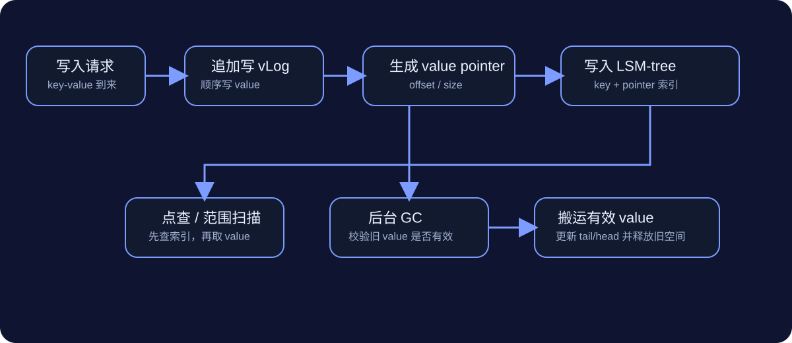

WiscKey 精读样板
0. 摘要翻译
WiscKey：一个持久化的基于 LSM-tree 的键值存储，采用“将键和值分离”的数据布局来最小化 I/O 放大。只把键保存在 LSM-tree 中，把值顺序地追加到单独的 value log（vLog），并借助 SSD 的顺序写入和并行随机读特性来优化性能。与 LevelDB 的微基准对比：加载数据库时快 2.5×–111×，随机查找快 1.6×–14×；在多种 YCSB 工作负载中也均优于 LevelDB 和 RocksDB。
1. 方法动机
a) 传统 LSM-tree 在 SSD 上仍让 value 跟着 compaction 反复搬运，写放大太重。
b) 现有方法主要问题是 value 读写被反复放大，浪费 SSD 带宽和寿命。
c) 核心直觉：键继续保持有序索引，值单独顺序写出去，用 SSD 的并行随机读补回来。
2. 方法设计
value 先顺序写入 vLog，拿到 offset/size，再把 key + pointer 写入 LSM-tree。
先查 LSM-tree 拿 pointer，再按 pointer 去 vLog 取 value，并检查 key 一致性。
删除只改 LSM-tree；旧 value 留给后台 GC 清理。
顺序拿一批 pointers，线程池并发预取 value，尽量把随机读并行化。
从 tail 扫旧日志，确认是否仍被当前索引引用；有效就搬到 head，无效就丢。
依靠 append-only 日志和 head/tail 元数据恢复索引。
3. 方法对比
| 方法 | 优点 | 缺点 | 改进点 |
|---|---|---|---|
| LevelDB | 结构简单，range scan 友好 | value 跟着 compaction 反复搬运，写放大高 | WiscKey 把 value 从 compaction 中解放出来 |
| RocksDB | 工程优化更多 | 本质仍有 value compaction 成本 | WiscKey 从数据布局层面改写 |
| WiscKey | 写放大小，点查快，SSD 友好 | range scan 需要额外随机读；GC 更复杂 | 用并行预取和轻量 GC 缓解副作用 |
4. 实验表现与优势
- 数据库加载：比 LevelDB 快 2.5×–111×
- 随机查找：快 1.6×–14×
- YCSB 六种 workload：均优于 LevelDB 和 RocksDB
优势最明显的场景：大 value、写密集、随机查找频繁。
5. 学习与应用
- 复现关键：实现 value log、让 LSM-tree 只存 key+pointer、补齐 GC 与恢复逻辑。
- 工程注意点：vLog 记录里要带 key；head/tail 要持久化；范围扫描要并发预取；小写入要做缓冲。
- 迁移性：凡是 value 大、key 小、运行在 SSD/NVMe 上的 KV/LSM 系统都值得借鉴。
6. 总结
键排序，值单独顺序写。
速记版：先把值顺序写日志；再把键和地址写索引；读时先查地址再取值；后台回收旧值；崩了靠日志补索引。
7. 流程图

右侧还有复现 checklist，后续可以继续加 draw.io 可编辑稿。